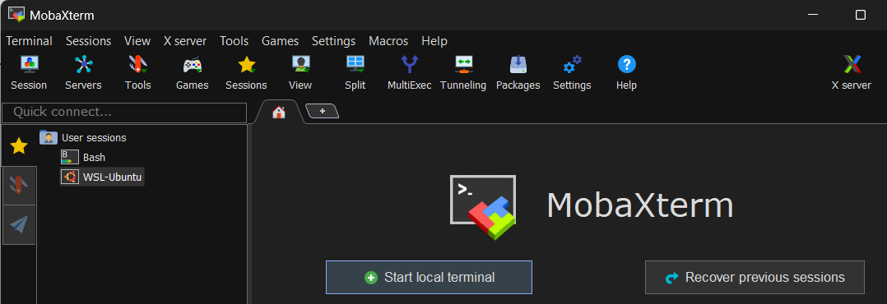
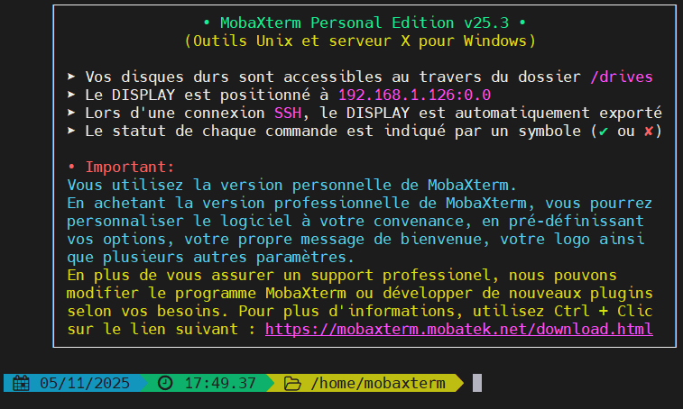

Partie 2 · 10 min
Prérequis : ouvrir un terminal
Pour ce TP, nous allons utiliser les commandes standard de l'environnement Linux/Unix afin de mieux comprendre l'administration de serveurs.
Sur quel système travailles-tu ?
Ton choix est mémorisé : le terminal d'entraînement des pages suivantes imitera celui de ton système.
Utilisateurs sous Windows : MobaXterm
L'outil recommandé sous Windows est MobaXterm, qui installe un terminal complet intégrant les commandes Linux/Unix (Bash). MobaXterm regroupe aussi un client SSH et un serveur X, qui serviront plus tard dans la ressource.
Consigne : suivre la fiche d'installation ci-dessous (également disponible dans Moodle) et lancer MobaXterm.
Téléchargement du logiciel
- Visiter le site officiel : dans le navigateur, aller sur le site officiel de MobaXterm. mobaxterm.mobatek.net
- Choisir l'édition : cliquer sur le bouton de téléchargement (Download).
- Sélectionner la version gratuite : choisir la Home Edition (gratuite). Cette version est largement suffisante pour tous les TP du BUT MMI.
Préparation et lancement
Le fichier téléchargé est une archive compressée au format ZIP.
-
Décompresser l'archive :
- localiser le fichier ZIP téléchargé (par exemple :
MobaXterm_installer_xx.x.zip) ; - faire un clic droit sur le fichier et choisir « Extraire tout... » (ou utiliser un logiciel comme 7-Zip) ;
- extraire le contenu dans un dossier facile à trouver, par exemple
C:\MMI\MobaXterm\.
- localiser le fichier ZIP téléchargé (par exemple :
-
Installer : se rendre dans ce dossier et
double-cliquer sur
MobaXterm_installer_xx.x.msi. - Lancer MobaXterm.
Note : lors du premier lancement, le logiciel peut demander d'autoriser certaines connexions via le pare-feu Windows. Confirmer et autoriser l'accès si cela est demandé.
Démarrer le terminal local (Bash)
- Écran de démarrage : l'interface principale de MobaXterm s'ouvre.
- Cliquer sur le terminal local : dans la fenêtre principale, cliquer sur le gros bouton Start local terminal (ou « Démarrer le terminal local »).

- Vérification : une nouvelle fenêtre de terminal s'ouvre, affichant l'invite de commande de type Bash (similaire à Linux ou macOS). L'invite ressemblera à ceci :

Vous êtes prêt pour utiliser MobaXterm ! L'invite
$ indique que vous pouvez maintenant taper les
commandes Linux/Unix abordées dans la fiche récapitulative
(pwd, ls, mkdir,
cd, chmod...).
Paramètre recommandé (optionnel) : le jeu de caractères
Si vous prévoyez d'utiliser des accents ou des caractères spéciaux, il est bon de vérifier un paramètre :
- cliquer sur Settings (en haut de la fenêtre) ;
- aller dans l'onglet Terminal ;
- sous Charset, s'assurer que l'option UTF-8 (Unicode) est sélectionnée. Cela garantit que les caractères spéciaux (comme les accents) sont correctement affichés.
Utilisateurs sous macOS : le Terminal
macOS est basé sur un système de type Unix : ses commandes de base sont les mêmes que celles utilisées sur la majorité des serveurs web (Linux). Votre environnement est donc prêt à l'emploi.
Consigne : lancer l'application Terminal. Vous la trouverez dans le dossier Applications > Utilitaires, ou en la cherchant via Spotlight (⌘ + Espace, puis taper « Terminal »). Vous vous retrouverez directement dans l'interface de ligne de commande où vous pourrez exécuter toutes les commandes du TP.
Sur les Mac récents, l'invite se termine par % au lieu
de $ (le shell s'appelle zsh) : les commandes
du TP fonctionnent exactement de la même façon.